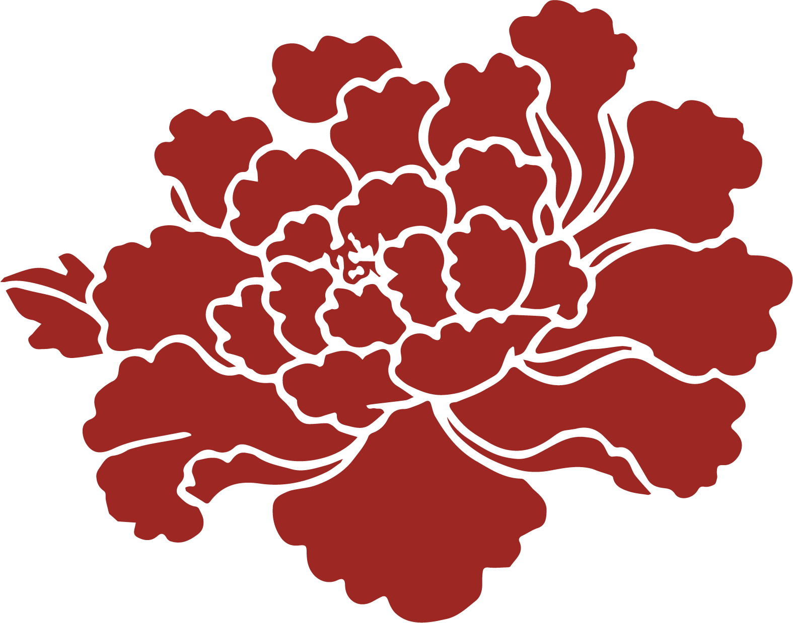
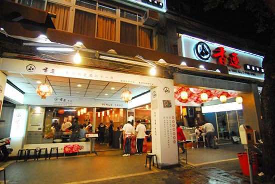
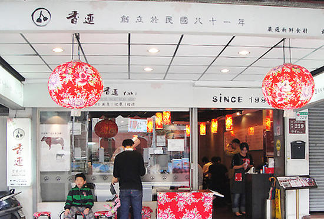
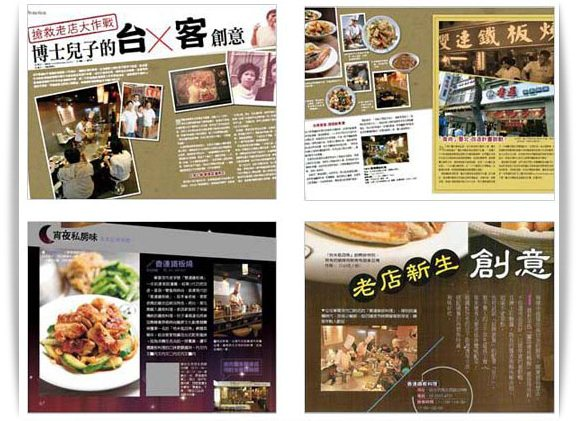
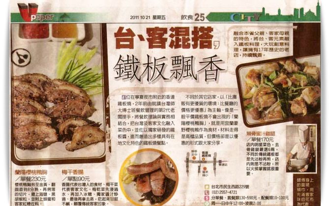

香連鐵板料理
關於香連
香連鐵板料理是一家位於台北石牌的日本鐵板料理，店內強調嚴選當季食材，並以創新的料理方式呈現給顧客。

覓食團隊以第一代經營者，來自台北石牌商圈人與新竹竹東客家人的待客豪情文化結合，導入創意設計，塑造核心文化。
LOGO 設計
- 結合鐵板料理不可或缺的兩個鍋鏟做為發想。
- 鍋鏟面設計成圓形，讓整體視覺較為圓潤，增加品牌識別度。
- 字體設計上，特別將「香」字融入鍋鏟的形象，並將「蓮」字設計的較有中國風，象徵著傳承與創新。
- LOGO 整體以黑色與紅色為主，除了是鐵板燒的顏色，更能呈現品牌沉穩、專業與熱情的形象。
餐廳改造
以外觀的設計為例，我們將原本單調的店面設計成較有日式風格的餐廳，並將香蓮的 Logo 與牡丹花做結合，讓顧客在用餐時能感受到品牌的用心。搭配溫暖的黃光與木紋，打造更舒適的用餐環境。


媒體報導

